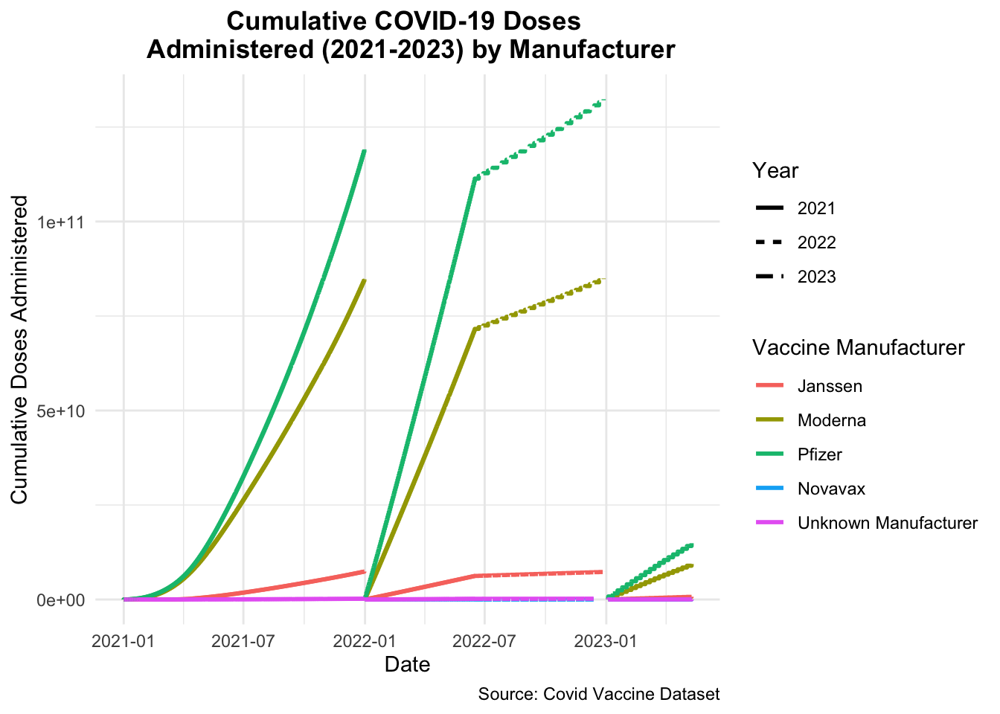

An example exploratory analysis script with code pulled in
Published
February 21, 2025
Setup
I will load any packages that may be useful for exploratory data analysis.
library(dplyr) #for data processing/cleaning
Attaching package: 'dplyr'
The following objects are masked from 'package:stats':
filter, lag
The following objects are masked from 'package:base':
intersect, setdiff, setequal, union
library(tidyr) #for data processing/cleaninglibrary(skimr) #for nice visualization of data library(here) #to set paths
here() starts at /Users/nataliecann/Desktop/MADA/Cann-MADA-project
library(ggplot2) # for graphslibrary(kableExtra) # for tables
Attaching package: 'kableExtra'
The following object is masked from 'package:dplyr':
group_rows
library(naniar) # for missingness visualization (gg_miss_var)
Attaching package: 'naniar'
The following object is masked from 'package:skimr':
n_complete
library(readr) # for reading in csv fileslibrary(purrr)library(lubridate) # for dealing with dates
Attaching package: 'lubridate'
The following objects are masked from 'package:base':
date, intersect, setdiff, union
library(corrplot) # correlations
corrplot 0.95 loaded
Now, I will load in the 6 data sets that I created in “project-processingfile.qmd”. Since these are RDS files, I will use the readRDS function to load them in.
Date MMWR_week Location Distributed
Min. :2021-01-01 Min. : 1.00 Length:23654 Min. : 0
1st Qu.:2021-04-01 1st Qu.:13.00 Class :character 1st Qu.: 801975
Median :2021-07-01 Median :26.00 Mode :character Median : 2805342
Mean :2021-07-01 Mean :26.51 Mean : 11481331
3rd Qu.:2021-09-30 3rd Qu.:39.00 3rd Qu.: 7375632
Max. :2021-12-31 Max. :53.00 Max. :615358465
Distributed_Janssen Distributed_Moderna Distributed_Pfizer
Min. : 0 Min. : 0 Min. : 0
1st Qu.: 10800 1st Qu.: 68600 1st Qu.: 83280
Median : 121600 Median : 1102600 Median : 1341405
Mean : 559312 Mean : 4435403 Mean : 6173320
3rd Qu.: 371150 3rd Qu.: 3009530 3rd Qu.: 3855105
Max. :29473800 Max. :225275000 Max. :365711565
Distributed_Novavax Distributed_Unk_Manuf Administered
Min. :0 Min. : 0 Min. : 0
1st Qu.:0 1st Qu.: 0 1st Qu.: 577084
Median :0 Median : 0 Median : 2149522
Mean :0 Mean : 3274 Mean : 8938052
3rd Qu.:0 3rd Qu.: 0 3rd Qu.: 6132243
Max. :0 Max. :8282150 Max. :509307789
Administered_Janssen Administered_Moderna Administered_Pfizer
Min. : 0 Min. : 0 Min. : 0
1st Qu.: 2143 1st Qu.: 258278 1st Qu.: 303407
Median : 58047 Median : 945596 Median : 1154988
Mean : 313112 Mean : 3581954 Mean : 5034488
3rd Qu.: 208002 3rd Qu.: 2418118 3rd Qu.: 3425905
Max. :17640334 Max. :194260394 Max. :296870831
Administered_Novavax Administered_Unk_Manuf Cumulative_Distributed
Min. :0 Min. : 0.0 Min. :6.250e+03
1st Qu.:0 1st Qu.: 22.2 1st Qu.:1.656e+10
Median :0 Median : 420.0 Median :8.156e+10
Mean :0 Mean : 8497.3 Mean :9.786e+10
3rd Qu.:0 3rd Qu.: 2136.0 3rd Qu.:1.671e+11
Max. :0 Max. :590970.0 Max. :2.716e+11
Cumulative_Distributed_Janssen Cumulative_Distributed_Moderna
Min. :0.000e+00 Min. :0.000e+00
1st Qu.:2.562e+08 1st Qu.:4.389e+09
Median :3.995e+09 Median :3.112e+10
Mean :4.683e+09 Mean :3.735e+10
3rd Qu.:8.224e+09 3rd Qu.:6.522e+10
Max. :1.323e+10 Max. :1.049e+11
Cumulative_Distributed_Pfizer Cumulative_Distributed_Novavax
Min. :0.000e+00 Min. :0
1st Qu.:4.586e+09 1st Qu.:0
Median :3.912e+10 Median :0
Mean :4.928e+10 Mean :0
3rd Qu.:8.636e+10 3rd Qu.:0
Max. :1.460e+11 Max. :0
Cumulative_Distributed_Unk_Manuf Cumulative_Administered
Min. : 0 Min. :3.027e+03
1st Qu.: 0 1st Qu.:1.175e+10
Median : 51750 Median :6.106e+10
Mean :12005992 Mean :7.464e+10
3rd Qu.: 1582650 3rd Qu.:1.281e+11
Max. :77445300 Max. :2.114e+11
Cumulative_Administered_Janssen Cumulative_Administered_Moderna
Min. :0.000e+00 Min. :0.000e+00
1st Qu.:1.023e+08 1st Qu.:5.480e+09
Median :1.832e+09 Median :2.644e+10
Mean :2.443e+09 Mean :3.103e+10
3rd Qu.:4.384e+09 3rd Qu.:5.298e+10
Max. :7.406e+09 Max. :8.473e+10
Cumulative_Administered_Pfizer Cumulative_Administered_Novavax
Min. :3.027e+03 Min. :0
1st Qu.:6.148e+09 1st Qu.:0
Median :3.274e+10 Median :0
Mean :4.110e+10 Mean :0
3rd Qu.:7.057e+10 3rd Qu.:0
Max. :1.191e+11 Max. :0
Cumulative_Administered_Unk_Manuf
Min. : 0
1st Qu.: 16357172
Median : 53728746
Mean : 69124415
3rd Qu.:114274592
Max. :200994093
Summary Statistics
I will first create a summary table that displays the mean, median, standard deviation, min, and max for the distribution and administration variables in the Covid Vaccine 2021 dataset.
After reviewing the table above, it appers that Pfizer had the greatest mean number of vaccines distributed in 2021 (6173320), followed by Moderna (4435403), and Janssen (559312). Pfizer also had the greatest mean number of vaccines administered in 2021 (5034488), followed by Moderna (3581954), and Janssen (313112). The mean number of vaccines distributed by an unknown manufacturer was 3274 and the mean number of vaccines administered by an unknown manufacturer was 8497.3.
Correlations
I will create a correlation matrix to assess whether or not there are any interesting correlations between the variables.
# Select numeric columns relevant to the correlation matrixcovid_vaccine_2021_corr <- covid_vaccine_2021 %>%select(Distributed, Distributed_Janssen, Distributed_Moderna, Distributed_Pfizer, Distributed_Unk_Manuf, Administered, Administered_Janssen, Administered_Moderna, Administered_Pfizer, Administered_Unk_Manuf)# Compute the correlation matrixcorrelation_cov_21 <-cor(covid_vaccine_2021_corr, use ="complete.obs")# Round the correlation matrix to 4 decimal placescorrelation_matrix_rounded_21 <-round(correlation_cov_21, 4)# Visualize the correlation matrix with just the correlation coefficientslibrary(corrplot)corrplot(correlation_matrix_rounded_21, method ="number", # Display only the correlation coefficientstype ="upper", # Upper triangle of the matrixtl.cex =0.8, # Size of text labelsnumber.cex =0.3, # Size of the correlation coefficient numbersaddCoef.col ="black", # Color of the correlation coefficientsnumber.digits =4) # Display 4 decimal places for the correlation coefficients
Correlations of interest: - correlation between distributed and administered vaccines: 0.9921 - correlation between distributed Janssen and administered Janssen vaccines: 0.9895 - correlation between distributed Moderna and administered Moderna vaccines: 0.9927 - correlation between distributed Pfizer and administered Pfizer vaccines: 0.9870 - correlation between distributed unknown manufacturer and administered unknown manufacturer vaccines: 0.1938
Graphs
I will create a time series plot that displays the cumulative number of COVID-19 vaccine doses administered in 2021 by manufacturer. After struggling a bit, I asked chatgpt to help me fix the code.
covid_vaccine_2021_long <- covid_vaccine_2021 %>%select(Date, Cumulative_Administered_Janssen, Cumulative_Administered_Moderna, Cumulative_Administered_Pfizer, Cumulative_Administered_Unk_Manuf) %>%pivot_longer(cols =-Date, names_to ="Manufacturer", values_to ="Cumulative_Administered")# Rename the factor levels for better readabilitycovid_vaccine_2021_long$Manufacturer <-factor(covid_vaccine_2021_long$Manufacturer,levels=c("Cumulative_Administered_Janssen", "Cumulative_Administered_Moderna", "Cumulative_Administered_Pfizer", "Cumulative_Administered_Unk_Manuf"),labels =c("Janssen", "Moderna", "Pfizer", "Unknown Manufacturer"))# Create the time series plotggplot(covid_vaccine_2021_long, aes(x = Date, y = Cumulative_Administered, color = Manufacturer)) +geom_line(size =1) +labs(title ="Cumulative COVID-19 Doses \n Administered in 2021 by Manufacturer",x ="Date",y ="Cumulative Doses Administered",color ="Vaccine Manufacturer",caption ="Source: Covid Vaccine Dataset") +theme_minimal() +theme(plot.title =element_text(hjust =0.5, face ="bold"))
Warning: Using `size` aesthetic for lines was deprecated in ggplot2 3.4.0.
ℹ Please use `linewidth` instead.
# Using log scale on y axis because of overlap in 2022 and 2023 graphsggplot(covid_vaccine_2021_long, aes(x = Date, y = Cumulative_Administered, color = Manufacturer)) +geom_line(size =1) +scale_y_continuous(trans ="log10") +# Apply log scale to y-axislabs(title ="Cumulative COVID-19 Doses \n Administered in 2021 by Manufacturer",x ="Date",y ="Cumulative Doses Administered (Log Scale)",color ="Vaccine Manufacturer",caption ="Source: Covid Vaccine Dataset") +theme_minimal() +theme(plot.title =element_text(hjust =0.5, face ="bold"))
Warning in scale_y_continuous(trans = "log10"): log-10 transformation
introduced infinite values.
From the graph above, you can see that Pfizer had the greatest number of cumulative doses administered in 2021, followed by Moderna, Janssen, and an unknown manufacturer.
I will now create a time series plot that displays the weekly number of COVID-19 vaccine doses administered in 2021 by manufacturer.
# Aggregate weekly administered doses by manufacturercovid_vaccine_2021_weekly <- covid_vaccine_2021 %>%mutate(Week =floor_date(Date, "week")) %>%group_by(Week) %>%summarise(Weekly_Administered_Janssen =sum(Administered_Janssen, na.rm =TRUE),Weekly_Administered_Moderna =sum(Administered_Moderna, na.rm =TRUE),Weekly_Administered_Pfizer =sum(Administered_Pfizer, na.rm =TRUE),Weekly_Administered_Unk_Manuf =sum(Administered_Unk_Manuf, na.rm =TRUE) ) %>%pivot_longer(cols =-Week, names_to ="Manufacturer", values_to ="Weekly_Administered")# Rename factor levels for better readabilitycovid_vaccine_2021_weekly$Manufacturer <-factor( covid_vaccine_2021_weekly$Manufacturer,levels =c("Weekly_Administered_Janssen", "Weekly_Administered_Moderna", "Weekly_Administered_Pfizer", "Weekly_Administered_Unk_Manuf"),labels =c("Janssen", "Moderna", "Pfizer", "Unknown Manufacturer"))# Create the weekly time series plotggplot(covid_vaccine_2021_weekly, aes(x = Week, y = Weekly_Administered, color = Manufacturer)) +geom_line(size =1) +labs(title ="Weekly COVID-19 Doses \n Administered in 2021 by Manufacturer",x ="Week",y ="Weekly Doses Administered",color ="Vaccine Manufacturer",caption ="Source: Covid Vaccine Dataset") +theme_minimal() +theme(plot.title =element_text(hjust =0.5, face ="bold"))
From the graph above, you can see that Pfizer had the greatest number of weekly doses administered in 2021, followed by Moderna, Janssen, and an unknown manufacturer.
Covid Vaccine 2022
summary(covid_vaccine_2022)
Date MMWR_week Location Distributed
Min. :2022-01-01 Min. : 1.00 Length:12480 Min. : 36490
1st Qu.:2022-02-18 1st Qu.: 7.00 Class :character 1st Qu.: 2485900
Median :2022-04-08 Median :14.00 Mode :character Median : 7031080
Mean :2022-04-20 Mean :16.31 Mean : 22851599
3rd Qu.:2022-05-27 3rd Qu.:21.00 3rd Qu.: 15271770
Max. :2022-12-28 Max. :52.00 Max. :939127005
Distributed_Janssen Distributed_Moderna Distributed_Pfizer
Min. : 600 Min. : 20700 Min. : 7490
1st Qu.: 101900 1st Qu.: 949500 1st Qu.: 1415815
Median : 274250 Median : 2646420 Median : 3980248
Mean : 969083 Mean : 8456175 Mean : 13423148
3rd Qu.: 613300 3rd Qu.: 5566205 3rd Qu.: 9214120
Max. :32496900 Max. :342216120 Max. :564453485
Distributed_Novavax Distributed_Unk_Manuf Administered
Min. : 0 Min. : 0 Min. : 36970
1st Qu.: 0 1st Qu.: 0 1st Qu.: 2006575
Median : 0 Median : 0 Median : 5948875
Mean : 2978 Mean : 215 Mean : 18013677
3rd Qu.: 0 3rd Qu.: 0 3rd Qu.: 11979998
Max. :1022300 Max. :1056400 Max. :663822575
Administered_Janssen Administered_Moderna Administered_Pfizer
Min. : 550 Min. : 13235 Min. : 2841
1st Qu.: 61251 1st Qu.: 759340 1st Qu.: 1089246
Median : 179327 Median : 2390088 Median : 3268640
Mean : 585730 Mean : 6805748 Mean : 10604486
3rd Qu.: 356731 3rd Qu.: 4527497 3rd Qu.: 7066001
Max. :18952708 Max. :248567365 Max. :395452177
Administered_Novavax Administered_Unk_Manuf Cumulative_Distributed
Min. : 0.0 Min. : 0 Min. :6.873e+06
1st Qu.: 0.0 1st Qu.: 480 1st Qu.:6.434e+10
Median : 0.0 Median : 2188 Median :1.338e+11
Mean : 138.6 Mean : 17578 Mean :1.359e+11
3rd Qu.: 0.0 3rd Qu.: 9318 3rd Qu.:2.059e+11
Max. :69062.0 Max. :781263 Max. :2.852e+11
NA's :7 NA's :3
Cumulative_Distributed_Janssen Cumulative_Distributed_Moderna
Min. :3.145e+05 Min. :2.559e+06
1st Qu.:2.944e+09 1st Qu.:2.357e+10
Median :5.988e+09 Median :4.935e+10
Mean :5.996e+09 Mean :5.019e+10
3rd Qu.:9.036e+09 3rd Qu.:7.615e+10
Max. :1.209e+10 Max. :1.055e+11
Cumulative_Distributed_Pfizer Cumulative_Distributed_Novavax
Min. :3.999e+06 Min. : 0
1st Qu.:3.783e+10 1st Qu.: 0
Median :7.849e+10 Median : 0
Mean :7.972e+10 Mean : 1861610
3rd Qu.:1.207e+11 3rd Qu.: 0
Max. :1.675e+11 Max. :37159600
Cumulative_Distributed_Unk_Manuf Cumulative_Administered
Min. : 0 Min. :5.672e+06
1st Qu.: 0 1st Qu.:5.226e+10
Median : 0 Median :1.079e+11
Mean : 107651 Mean :1.090e+11
3rd Qu.: 0 3rd Qu.:1.650e+11
Max. :2683400 Max. :2.248e+11
Cumulative_Administered_Janssen Cumulative_Administered_Moderna
Min. :1.865e+05 Min. :2.340e+06
1st Qu.:1.767e+09 1st Qu.:1.987e+10
Median :3.614e+09 Median :4.084e+10
Mean :3.620e+09 Mean :4.126e+10
3rd Qu.:5.463e+09 3rd Qu.:6.237e+10
Max. :7.310e+09 Max. :8.494e+10
Cumulative_Administered_Pfizer Cumulative_Administered_Novavax
Min. :3.142e+06 Min. : 0
1st Qu.:3.057e+10 1st Qu.: 0
Median :6.335e+10 Median : 0
Mean :6.403e+10 Mean : 47419
3rd Qu.:9.698e+10 3rd Qu.: 0
Max. :1.323e+11 Max. :1330469
NA's :186
Cumulative_Administered_Unk_Manuf
Min. : 2869
1st Qu.: 48227105
Median : 98659847
Mean :101410718
3rd Qu.:153176681
Max. :214648306
NA's :186
Summary Statistics
I will create a summary table for the Covid Vaccine 2022 dataset.
After reviewing the table above, it appers that Pfizer had the greatest mean number of vaccines distributed in 2021 (13423148), followed by Moderna (8456175), Janssen (969083), and Novavax (2978). Pfizer also had the greatest mean number of vaccines administered in 2021 (10604486), followed by Moderna (6805748), Janssen (585730), and Novavax (138.6). The mean number of vaccines distributed by an unknown manufacturer was 215 and the mean number of vaccines administered by an unknown manufacturer was 17578.
Correlations
I will create a correlation matrix.
# Select numeric columns relevant to the correlation matrixcovid_vaccine_2022_corr <- covid_vaccine_2022 %>%select(Distributed, Distributed_Janssen, Distributed_Moderna, Distributed_Pfizer, Distributed_Novavax, Distributed_Unk_Manuf, Administered, Administered_Janssen, Administered_Moderna, Administered_Pfizer, Administered_Novavax, Administered_Unk_Manuf)# Compute the correlation matrixcorrelation_cov_22 <-cor(covid_vaccine_2022_corr, use ="complete.obs")# Round the correlation matrix to 4 decimal placescorrelation_matrix_rounded_22 <-round(correlation_cov_22, 4)# Visualize the correlation matrix with just the correlation coefficientslibrary(corrplot)corrplot(correlation_matrix_rounded_22, method ="number", # Display only the correlation coefficientstype ="upper", # Upper triangle of the matrixtl.cex =0.8, # Size of text labelsnumber.cex =0.3, # Size of the correlation coefficient numbersaddCoef.col ="black", # Color of the correlation coefficientsnumber.digits =4) # Display 4 decimal places for the correlation coefficients
Correlations of interest: - correlation between distributed and administered vaccines: 0.9991 - correlation between distributed Janssen and administered Janssen vaccines: 0.9996 - correlation between distributed Moderna and administered Moderna vaccines: 0.9990 - correlation between distributed Pfizer and administered Pfizer vaccines: 0.9991 - correlation between distributed Novavax and administered Novavax vaccines: 0.9520 - correlation between distributed unknown manufacturer and administered unknown manufacturer vaccines: 0.0952
Graphs
I will create a time series plot that displays the cumulative number of COVID-19 vaccine doses administered in 2022 by manufacturer.
covid_vaccine_2022_long <- covid_vaccine_2022 %>%select(Date, Cumulative_Administered_Janssen, Cumulative_Administered_Moderna, Cumulative_Administered_Pfizer, Cumulative_Administered_Novavax, Cumulative_Administered_Unk_Manuf) %>%pivot_longer(cols =-Date, names_to ="Manufacturer", values_to ="Cumulative_Administered")# Rename the factor levels for better readabilitycovid_vaccine_2022_long$Manufacturer <-factor(covid_vaccine_2022_long$Manufacturer,levels=c("Cumulative_Administered_Janssen", "Cumulative_Administered_Moderna", "Cumulative_Administered_Pfizer", "Cumulative_Administered_Novavax", "Cumulative_Administered_Unk_Manuf"),labels =c("Janssen", "Moderna", "Pfizer", "Novavax", "Unknown Manufacturer"))# Create the time series plotggplot(covid_vaccine_2022_long, aes(x = Date, y = Cumulative_Administered, color = Manufacturer)) +geom_line(size =1) +labs(title ="Cumulative COVID-19 Doses \n Administered in 2022 by Manufacturer",x ="Date",y ="Cumulative Doses Administered",color ="Vaccine Manufacturer",caption ="Source: Covid Vaccine Dataset") +theme_minimal() +theme(plot.title =element_text(hjust =0.5, face ="bold"))
Warning: Removed 372 rows containing missing values or values outside the scale range
(`geom_line()`).
# Using facets because of overlapggplot(covid_vaccine_2022_long, aes(x = Date, y = Cumulative_Administered, color = Manufacturer)) +geom_line(size =1) +facet_wrap(~ Manufacturer, scales ="free_y") +# Separate panels for each manufacturerlabs(title ="Cumulative COVID-19 Doses Administered in 2022",x ="Date",y ="Cumulative Doses Administered",caption ="Source: Covid Vaccine Dataset") +theme_minimal() +theme(plot.title =element_text(hjust =0.5, face ="bold"))
Warning: Removed 372 rows containing missing values or values outside the scale range
(`geom_line()`).
# Using log scale on y axis because of overlap ggplot(covid_vaccine_2022_long, aes(x = Date, y = Cumulative_Administered, color = Manufacturer)) +geom_line(size =1) +scale_y_continuous(trans ="log10") +# Apply log scale to y-axislabs(title ="Cumulative COVID-19 Doses \n Administered in 2022 by Manufacturer",x ="Date",y ="Cumulative Doses Administered (Log Scale)",color ="Vaccine Manufacturer",caption ="Source: Covid Vaccine Dataset") +theme_minimal() +theme(plot.title =element_text(hjust =0.5, face ="bold"))
Warning in scale_y_continuous(trans = "log10"): log-10 transformation introduced infinite values.
Removed 372 rows containing missing values or values outside the scale range
(`geom_line()`).
From the graph above, you can see that Pfizer had the greatest number of cumulative doses administered in 2022, followed by Moderna, Janssen, unknown manufacturers, and Novavax.
I will now create a time series plot that displays the weekly number of COVID-19 vaccine doses administered in 2022 by manufacturer.
# Aggregate weekly administered doses by manufacturercovid_vaccine_2022_weekly <- covid_vaccine_2022 %>%mutate(Week =floor_date(Date, "week")) %>%group_by(Week) %>%summarise(Weekly_Administered_Janssen =sum(Administered_Janssen, na.rm =TRUE),Weekly_Administered_Moderna =sum(Administered_Moderna, na.rm =TRUE),Weekly_Administered_Pfizer =sum(Administered_Pfizer, na.rm =TRUE),Weekly_Administered_Novavax =sum(Administered_Novavax, na.rm =TRUE),Weekly_Administered_Unk_Manuf =sum(Administered_Unk_Manuf, na.rm =TRUE) ) %>%pivot_longer(cols =-Week, names_to ="Manufacturer", values_to ="Weekly_Administered")# Rename factor levels for better readabilitycovid_vaccine_2022_weekly$Manufacturer <-factor( covid_vaccine_2022_weekly$Manufacturer,levels =c("Weekly_Administered_Janssen", "Weekly_Administered_Moderna", "Weekly_Administered_Pfizer", "Weekly_Administered_Novavax", "Weekly_Administered_Unk_Manuf"),labels =c("Janssen", "Moderna", "Pfizer", "Novavax", "Unknown Manufacturer"))# Create the weekly time series plotggplot(covid_vaccine_2022_weekly, aes(x = Week, y = Weekly_Administered, color = Manufacturer)) +geom_line(size =1) +labs(title ="Weekly COVID-19 Doses \n Administered in 2022 by Manufacturer",x ="Week",y ="Weekly Doses Administered",color ="Vaccine Manufacturer",caption ="Source: Covid Vaccine Dataset") +theme_minimal() +theme(plot.title =element_text(hjust =0.5, face ="bold"))
From the graph above, you can see that Pfizer had the greatest number of weekly doses administered in 2022, followed by Moderna, Janssen, and an unknown manufacturer and Novavax. There is overlap between the Novavax and Unknown Manufacturer lines.
Covid Vaccine 2023
summary(covid_vaccine_2023)
Date MMWR_week Location Distributed
Min. :2023-01-04 Min. : 1 Length:1216 Min. : 51200
1st Qu.:2023-02-01 1st Qu.: 5 Class :character 1st Qu.: 3377982
Median :2023-03-08 Median :10 Mode :character Median : 8880108
Mean :2023-03-08 Mean :10 Mean : 30516716
3rd Qu.:2023-04-12 3rd Qu.:15 3rd Qu.: 20308848
Max. :2023-05-10 Max. :19 Max. :984444295
Distributed_Janssen Distributed_Moderna Distributed_Pfizer
Min. : 600 Min. : 25000 Min. : 14390
1st Qu.: 105525 1st Qu.: 1206625 1st Qu.: 1926765
Median : 279050 Median : 3353720 Median : 5003280
Mean : 999370 Mean : 10613644 Mean : 17388572
3rd Qu.: 627775 3rd Qu.: 7177350 3rd Qu.: 11663125
Max. :31552000 Max. :352247700 Max. :586424075
Distributed_Novavax Distributed_Unk_Manuf Administered
Min. : 0 Min. :0 Min. : 51317
1st Qu.: 4500 1st Qu.:0 1st Qu.: 2434192
Median : 11550 Median :0 Median : 6826220
Mean : 38129 Mean :0 Mean : 21262637
3rd Qu.: 28625 3rd Qu.:0 3rd Qu.: 14577849
Max. :1410700 Max. :0 Max. :676728782
Administered_Janssen Administered_Moderna Administered_Pfizer
Min. : 580 Min. : 15547 Min. : 9384
1st Qu.: 63307 1st Qu.: 892975 1st Qu.: 1289791
Median : 184475 Median : 2694957 Median : 3765826
Mean : 599531 Mean : 7731522 Mean : 12246888
3rd Qu.: 363916 3rd Qu.: 5243248 3rd Qu.: 8434016
Max. :19007537 Max. :251852502 Max. :401685954
Administered_Novavax Administered_Unk_Manuf Cumulative_Distributed
Min. : 0 Min. : 0.0 Min. :5.281e+06
1st Qu.: 226 1st Qu.: 921.8 1st Qu.:9.335e+09
Median : 687 Median : 2788.0 Median :1.874e+10
Mean : 2561 Mean : 26916.2 Mean :1.847e+10
3rd Qu.: 2010 3rd Qu.: 15957.2 3rd Qu.:2.739e+10
Max. :89195 Max. :890835.0 Max. :3.711e+10
Cumulative_Distributed_Janssen Cumulative_Distributed_Moderna
Min. :1.714e+05 Min. :2.117e+06
1st Qu.:3.096e+08 1st Qu.:3.399e+09
Median :6.189e+08 Median :6.819e+09
Mean :6.085e+08 Mean :6.613e+09
3rd Qu.:9.014e+08 3rd Qu.:9.794e+09
Max. :1.215e+09 Max. :1.291e+10
Cumulative_Distributed_Pfizer Cumulative_Distributed_Novavax
Min. :2.984e+06 Min. : 7900
1st Qu.:5.616e+09 1st Qu.:10439650
Median :1.128e+10 Median :21589750
Mean :1.090e+10 Mean :21920722
3rd Qu.:1.614e+10 3rd Qu.:32864400
Max. :2.114e+10 Max. :46364600
Cumulative_Distributed_Unk_Manuf Cumulative_Administered
Min. :0 Min. :3.069e+06
1st Qu.:0 1st Qu.:6.569e+09
Median :0 Median :1.314e+10
Mean :0 Mean :1.292e+10
3rd Qu.:0 3rd Qu.:1.914e+10
Max. :0 Max. :2.586e+10
Cumulative_Administered_Janssen Cumulative_Administered_Moderna
Min. : 68499 Min. :1.323e+06
1st Qu.:185836840 1st Qu.:2.463e+09
Median :371620238 Median :4.926e+09
Mean :365117218 Mean :4.792e+09
3rd Qu.:540719122 3rd Qu.:7.092e+09
Max. :729029149 Max. :9.402e+09
Cumulative_Administered_Pfizer Cumulative_Administered_Novavax
Min. :1.675e+06 Min. : 218
1st Qu.:3.912e+09 1st Qu.: 722468
Median :7.826e+09 Median :1498371
Mean :7.603e+09 Mean :1500012
3rd Qu.:1.125e+10 3rd Qu.:2242998
Max. :1.489e+10 Max. :3113817
Cumulative_Administered_Unk_Manuf
Min. : 2314
1st Qu.: 7829227
Median :16093385
Mean :16025876
3rd Qu.:23821355
Max. :32730106
Summary Statistics
I will create a summary table for the Covid Vaccine 2023 dataset.
After reviewing the table above, it appers that Pfizer had the greatest mean number of vaccines distributed in 2021 (17388572), followed by Moderna (10613644), Janssen (999370), and Novavax (38129). Pfizer also had the greatest mean number of vaccines administered in 2021 (12246888), followed by Moderna (7731522), Janssen (599531), and Novavax (2561). The mean number of vaccines distributed by an unknown manufacturer was 38129 and the mean number of vaccines administered by an unknown manufacturer was 26916.2.
Correlations
I will create a correlation matrix.
# Select numeric columns relevant to the correlation matrixcovid_vaccine_2023_corr <- covid_vaccine_2023 %>%select(Distributed, Distributed_Janssen, Distributed_Moderna, Distributed_Pfizer, Distributed_Novavax, Distributed_Unk_Manuf, Administered, Administered_Janssen, Administered_Moderna, Administered_Pfizer, Administered_Novavax, Administered_Unk_Manuf)# Compute the correlation matrixcorrelation_cov_23 <-cor(covid_vaccine_2023_corr, use ="complete.obs")
Warning in cor(covid_vaccine_2023_corr, use = "complete.obs"): the standard
deviation is zero
# Round the correlation matrix to 4 decimal placescorrelation_matrix_rounded <-round(correlation_cov_23, 4)# Visualize the correlation matrix with just the correlation coefficientslibrary(corrplot)corrplot(correlation_matrix_rounded, method ="number", # Display only the correlation coefficientstype ="upper", # Upper triangle of the matrixtl.cex =0.8, # Size of text labelsnumber.cex =0.3, # Size of the correlation coefficient numbersaddCoef.col ="black", # Color of the correlation coefficientsnumber.digits =4) # Display 4 decimal places for the correlation coefficients
Correlations of interest: - correlation between distributed and administered vaccines: 0.9999 - correlation between distributed Janssen and administered Janssen vaccines: 0.9997 - correlation between distributed Moderna and administered Moderna vaccines: 0.9997 - correlation between distributed Pfizer and administered Pfizer vaccines: 0.9996 - correlation between distributed Novavax and administered Novavax vaccines: 0.9965 - correlation between distributed unknown manufacturer and administered unknown manufacturer vaccines: ?
Graphs
I will create a time series plot that displays the cumulative number of COVID-19 vaccine doses administered in 2023 by manufacturer.
covid_vaccine_2023_long <- covid_vaccine_2023 %>%select(Date, Cumulative_Administered_Janssen, Cumulative_Administered_Moderna, Cumulative_Administered_Pfizer, Cumulative_Administered_Novavax, Cumulative_Administered_Unk_Manuf) %>%pivot_longer(cols =-Date, names_to ="Manufacturer", values_to ="Cumulative_Administered")# Rename the factor levels for better readabilitycovid_vaccine_2023_long$Manufacturer <-factor(covid_vaccine_2023_long$Manufacturer,levels=c("Cumulative_Administered_Janssen", "Cumulative_Administered_Moderna", "Cumulative_Administered_Pfizer", "Cumulative_Administered_Novavax", "Cumulative_Administered_Unk_Manuf"),labels =c("Janssen", "Moderna", "Pfizer", "Novavax", "Unknown Manufacturer"))# Create the time series plotggplot(covid_vaccine_2023_long, aes(x = Date, y = Cumulative_Administered, color = Manufacturer)) +geom_line(size =1) +labs(title ="Cumulative COVID-19 Doses \n Administered in 2023 by Manufacturer",x ="Date",y ="Cumulative Doses Administered",color ="Vaccine Manufacturer",caption ="Source: Covid Vaccine Dataset") +theme_minimal() +theme(plot.title =element_text(hjust =0.5, face ="bold"))
# Using facets because over line overlapggplot(covid_vaccine_2022_long, aes(x = Date, y = Cumulative_Administered, color = Manufacturer)) +geom_line(size =1) +facet_wrap(~ Manufacturer, scales ="free_y") +# Separate panels for each manufacturerlabs(title ="Cumulative COVID-19 Doses Administered in 2023",x ="Date",y ="Cumulative Doses Administered",caption ="Source: Covid Vaccine Dataset") +theme_minimal() +theme(plot.title =element_text(hjust =0.5, face ="bold"))
Warning: Removed 372 rows containing missing values or values outside the scale range
(`geom_line()`).
# Using log scale on y axis because of overlap ggplot(covid_vaccine_2023_long, aes(x = Date, y = Cumulative_Administered, color = Manufacturer)) +geom_line(size =1) +scale_y_continuous(trans ="log10") +# Apply log scale to y-axislabs(title ="Cumulative COVID-19 Doses \n Administered in 2023 by Manufacturer",x ="Date",y ="Cumulative Doses Administered (Log Scale)",color ="Vaccine Manufacturer",caption ="Source: Covid Vaccine Dataset") +theme_minimal() +theme(plot.title =element_text(hjust =0.5, face ="bold"))
From the graph above, you can see that Pfizer had the greatest number of cumulative doses administered in 2023, followed by Moderna, Janssen, unknown manufacturers, and Novavax.
I will now create a time series plot that displays the weekly number of COVID-19 vaccine doses administered in 2023 by manufacturer.
# Aggregate weekly administered doses by manufacturercovid_vaccine_2023_weekly <- covid_vaccine_2023 %>%mutate(Week =floor_date(Date, "week")) %>%group_by(Week) %>%summarise(Weekly_Administered_Janssen =sum(Administered_Janssen, na.rm =TRUE),Weekly_Administered_Moderna =sum(Administered_Moderna, na.rm =TRUE),Weekly_Administered_Pfizer =sum(Administered_Pfizer, na.rm =TRUE),Weekly_Administered_Novavax =sum(Administered_Novavax, na.rm =TRUE),Weekly_Administered_Unk_Manuf =sum(Administered_Unk_Manuf, na.rm =TRUE) ) %>%pivot_longer(cols =-Week, names_to ="Manufacturer", values_to ="Weekly_Administered")# Rename factor levels for better readabilitycovid_vaccine_2023_weekly$Manufacturer <-factor( covid_vaccine_2023_weekly$Manufacturer,levels =c("Weekly_Administered_Janssen", "Weekly_Administered_Moderna", "Weekly_Administered_Pfizer", "Weekly_Administered_Novavax", "Weekly_Administered_Unk_Manuf"),labels =c("Janssen", "Moderna", "Pfizer", "Novavax", "Unknown Manufacturer"))# Create the weekly time series plotggplot(covid_vaccine_2023_weekly, aes(x = Week, y = Weekly_Administered, color = Manufacturer)) +geom_line(size =1) +labs(title ="Weekly COVID-19 Doses \n Administered in 2021 by Manufacturer",x ="Week",y ="Weekly Doses Administered",color ="Vaccine Manufacturer",caption ="Source: Covid Vaccine Dataset") +theme_minimal() +theme(plot.title =element_text(hjust =0.5, face ="bold"))
From the graph above, you can see that Pfizer had the greatest number of weekly doses administered in 2023, followed by Moderna, Janssen, and an unknown manufacturer and Novavax. There is overlap between the Novavax and Unknown Manufacturer lines.
Graph of all years together
I will create a time series plot that displays the cumulative number of COVID-19 vaccine doses administered from 2021 to 2023 by manufacturer.
# Combine data for all years into one dataframecovid_vaccine_combined <-bind_rows( covid_vaccine_2021 %>%select(Date, Cumulative_Administered_Janssen, Cumulative_Administered_Moderna, Cumulative_Administered_Pfizer, Cumulative_Administered_Unk_Manuf) %>%pivot_longer(cols =-Date, names_to ="Manufacturer", values_to ="Cumulative_Administered") %>%mutate(Year =2021), # Add Year column for 2021 covid_vaccine_2022 %>%select(Date, Cumulative_Administered_Janssen, Cumulative_Administered_Moderna, Cumulative_Administered_Pfizer, Cumulative_Administered_Novavax, Cumulative_Administered_Unk_Manuf) %>%pivot_longer(cols =-Date, names_to ="Manufacturer", values_to ="Cumulative_Administered") %>%mutate(Year =2022), # Add Year column for 2022 covid_vaccine_2023 %>%select(Date, Cumulative_Administered_Janssen, Cumulative_Administered_Moderna, Cumulative_Administered_Pfizer, Cumulative_Administered_Novavax, Cumulative_Administered_Unk_Manuf) %>%pivot_longer(cols =-Date, names_to ="Manufacturer", values_to ="Cumulative_Administered") %>%mutate(Year =2023) # Add Year column for 2023)# Rename the factor levels for better readabilitycovid_vaccine_combined$Manufacturer <-factor(covid_vaccine_combined$Manufacturer,levels =c("Cumulative_Administered_Janssen", "Cumulative_Administered_Moderna", "Cumulative_Administered_Pfizer", "Cumulative_Administered_Novavax", "Cumulative_Administered_Unk_Manuf"),labels =c("Janssen", "Moderna", "Pfizer", "Novavax", "Unknown Manufacturer"))# Create the time series plot for all yearsggplot(covid_vaccine_combined, aes(x = Date, y = Cumulative_Administered, color = Manufacturer, linetype =factor(Year))) +geom_line(size =1) +labs(title ="Cumulative COVID-19 Doses \n Administered (2021-2023) by Manufacturer",x ="Date",y ="Cumulative Doses Administered",color ="Vaccine Manufacturer",linetype ="Year",caption ="Source: Covid Vaccine Dataset") +theme_minimal() +theme(plot.title =element_text(hjust =0.5, face ="bold"))
Warning: Removed 372 rows containing missing values or values outside the scale range
(`geom_line()`).

Note: the graph’s x axis does not display the full year of 2023 because the data collection halted in May 2023 for this specific dataset.
Table of Cumulative Counts
I will create a table that displays the cumulative counts of covid vaccines administered across 2021, 2022, and 2023 and by manufacturer.
As seen in the table above, each year Pfizer had the greatest number of vaccines administered.
Simple Linear Fit Models
I will run a few simple linear fit models that predict number of vaccines administered based on manufacturer.
# Combine the data for all yearscovid_vaccine_all <-bind_rows( covid_vaccine_2021 %>%mutate(Year =2021), covid_vaccine_2022 %>%mutate(Year =2022), covid_vaccine_2023 %>%mutate(Year =2023))# Reshape the dataset to long formatcovid_vaccine_long <- covid_vaccine_all %>%select(Date, Year, Administered_Janssen, Administered_Moderna, Administered_Pfizer, Administered_Novavax, Administered_Unk_Manuf) %>%pivot_longer(cols =starts_with("Administered"), names_to ="Manufacturer", values_to ="Doses_Administered")# Rename manufacturer categories for readabilitycovid_vaccine_long$Manufacturer <-factor(covid_vaccine_long$Manufacturer,levels =c("Administered_Janssen", "Administered_Moderna", "Administered_Pfizer", "Administered_Novavax", "Administered_Unk_Manuf"), labels =c("Janssen", "Moderna", "Pfizer", "Novavax", "Unknown Manufacturer"))# Fit a simple linear regression model predicting doses administered based on manufacturermodel <-lm(Doses_Administered ~ Manufacturer, data = covid_vaccine_long)# Display model summarysummary(model)
Call:
lm(formula = Doses_Administered ~ Manufacturer, data = covid_vaccine_long)
Residuals:
Min 1Q Median 3Q Max
-7130441 -3159903 -79462 -130 394555513
Coefficients:
Estimate Std. Error t value Pr(>|t|)
(Intercept) 413529 86879 4.760 1.94e-06 ***
ManufacturerModerna 4380710 122865 35.655 < 2e-16 ***
ManufacturerPfizer 6716912 122865 54.669 < 2e-16 ***
ManufacturerNovavax -413399 122871 -3.364 0.000767 ***
ManufacturerUnknown Manufacturer -401398 122868 -3.267 0.001087 **
---
Signif. codes: 0 '***' 0.001 '**' 0.01 '*' 0.05 '.' 0.1 ' ' 1
Residual standard error: 16790000 on 186735 degrees of freedom
(10 observations deleted due to missingness)
Multiple R-squared: 0.02993, Adjusted R-squared: 0.02991
F-statistic: 1440 on 4 and 186735 DF, p-value: < 2.2e-16
With an alpa value of 0.05, the p-values for each manufacturer are less than 0.5 (Janssen was set as the reference so it does not appear in the coefficients list with an estimate) . This means that the manufacturer has a statistically significant impact on the number of doses administered. It can be noted that Pfizer and Moderna both have very small p-values (both of 2e-16); furthermore they have positive estimate values, indicating they have a higher number of administered does than Janssen. The negative estimate values for Novavax and Unknown Manufacturer indicate that they have a lower number of administered doses compared to Janssen.
Exploring the Flu Vaccine Datasets
Flu Vaccine 2021
summary(flu_vaccine_2021)
Influenza_Season Start_Date End_Date
Length:32 Min. :2021-01-03 Min. :2021-01-09
Class :character 1st Qu.:2021-02-26 1st Qu.:2021-03-04
Mode :character Median :2021-09-08 Median :2021-09-14
Mean :2021-07-31 Mean :2021-08-06
3rd Qu.:2021-11-01 3rd Qu.:2021-11-07
Max. :2021-12-26 Max. :2022-01-01
Reporting_Timeframe Week Week_Sort_Order
Length:32 Min. : 1.00 Min. : 1.00
Class :character 1st Qu.: 8.75 1st Qu.: 8.75
Mode :character Median :36.50 Median :16.50
Mean :30.88 Mean :16.50
3rd Qu.:44.25 3rd Qu.:24.25
Max. :52.00 Max. :32.00
Current_Season_Week_Ending_Label Cumulative_Flu_Doses_Distributed
Length:32 Min. : 0.99
Class :character 1st Qu.: 98.03
Mode :character Median :166.75
Mean :136.25
3rd Qu.:193.42
Max. :194.39
Current_Through Flu_Doses_Administered_Weekly
Length:32 Min. : 0.0100
Class :character 1st Qu.: 0.1975
Mode :character Median : 1.9200
Mean : 5.4631
3rd Qu.:11.5150
Max. :18.5500
Cumulative_Flu_Doses_Distributed_Millions
Min. : 990000
1st Qu.: 98030000
Median :166755000
Mean :136245625
3rd Qu.:193420000
Max. :194390000
Flu_Doses_Administered_Weekly_Millions
Min. : 10000
1st Qu.: 197500
Median : 1920000
Mean : 5463125
3rd Qu.:11515000
Max. :18550000
Summary Statistics
I will create a summary table for the flu vaccine 2021 dataset. Since there are two different flu seasons within a year, I will group by the flu season and then add the min, max, mean, median, and standard deviation for the number of flu doses administered weekly in millions.
The mean doses for the 2020-2021 influenza season is 164444.4 and the mean doses for the 2021-2022 influenza season is 7536521.7. Keep in mind the 2020-2021 flu season was a shorter amount of time than the 2021-2022 flu season in the year of 2021.
Graphs
I will create a time series plot that displays the cumulative number of influenza vaccine doses administered in 2021 by manufacturer.
ggplot(flu_vaccine_2021, aes(x = Week, y = Cumulative_Flu_Doses_Distributed_Millions, color = Influenza_Season)) +geom_line(size =1) +labs(title ="Cumulative Flu Vaccine Doses Administered in 2021",x ="Week",y ="Doses Administered (Millions)",color ="Influenza Season" )
Here is a time series plot that displays the weekly number of flu vaccine doses administered in 2021.
ggplot(flu_vaccine_2021, aes(x = Week, y = Flu_Doses_Administered_Weekly_Millions, color = Influenza_Season)) +geom_line(size =1) +labs(title ="Weekly Flu Vaccine Doses Administered in 2021",x ="Week",y ="Doses Administered (Millions)",color ="Influenza Season" )
Doses administered (during 2021-2022 flu season) appear to peak around week 36-37.
Flu Vaccine 2022
summary(flu_vaccine_2022)
Influenza_Season Start_Date End_Date
Length:32 Min. :2022-01-02 Min. :2022-01-08
Class :character 1st Qu.:2022-02-25 1st Qu.:2022-03-03
Mode :character Median :2022-09-07 Median :2022-09-13
Mean :2022-07-30 Mean :2022-08-05
3rd Qu.:2022-10-31 3rd Qu.:2022-11-06
Max. :2022-12-25 Max. :2022-12-31
Reporting_Timeframe Week Week_Sort_Order
Length:32 Min. : 1.00 Min. : 1.00
Class :character 1st Qu.: 8.75 1st Qu.: 8.75
Mode :character Median :36.50 Median :16.50
Mean :30.88 Mean :16.50
3rd Qu.:44.25 3rd Qu.:24.25
Max. :52.00 Max. :32.00
Current_Season_Week_Ending_Label Cumulative_Flu_Doses_Distributed
Length:32 Min. : 6.53
Class :character 1st Qu.: 86.29
Mode :character Median :153.17
Mean :124.21
3rd Qu.:174.00
Max. :175.62
Current_Through Flu_Doses_Administered_Weekly
Length:32 Min. : 0.0900
Class :character 1st Qu.: 0.4625
Mode :character Median : 2.9550
Mean : 5.4059
3rd Qu.: 8.8275
Max. :24.3800
Cumulative_Flu_Doses_Distributed_Millions
Min. : 6530000
1st Qu.: 86290000
Median :153170000
Mean :124205938
3rd Qu.:174005000
Max. :175620000
Flu_Doses_Administered_Weekly_Millions
Min. : 90000
1st Qu.: 462500
Median : 2955000
Mean : 5405938
3rd Qu.: 8827500
Max. :24380000
Summary Statistics
I will create a summary table for the flu vaccine 2022 dataset. I will use the same coding format I used above for flu_vaccine_2021.
The mean doses for the 2021-2022 influenza season is 253333.3 and the mean doses for the 2022-2023 influenza season is 74221173.9. Keep in mind the 2021-2022 flu season was a shorter amount of time than the 2022-2023 flu season in the year of 2022.
Graphs
I will create a time series plot that displays the cumulative number of influenza vaccine doses administered in 2022 by manufacturer.
ggplot(flu_vaccine_2022, aes(x = Week, y = Cumulative_Flu_Doses_Distributed_Millions, color = Influenza_Season)) +geom_line(size =1) +labs(title ="Cumulative Flu Vaccine Doses Administered in 2022",x ="Week",y ="Doses Administered (Millions)",color ="Influenza Season" )
Here is a time series plot that displays the weekly number of flu vaccine doses administered in 2022.
ggplot(flu_vaccine_2022, aes(x = Week, y = Flu_Doses_Administered_Weekly_Millions, color = Influenza_Season)) +geom_line(size =1) +labs(title ="Weekly Flu Vaccine Doses Administered in 2022",x ="Week",y ="Doses Administered (Millions)",color ="Influenza Season" )
Doses administered (during 2022-2023 flu season) appear to peak around week 36. There appears to be another peak around week 50.
Flu Vaccine 2023
summary(flu_vaccine_2023)
Influenza_Season Start_Date End_Date
Length:32 Min. :2023-01-01 Min. :2023-01-07
Class :character 1st Qu.:2023-02-24 1st Qu.:2023-03-02
Mode :character Median :2023-09-06 Median :2023-09-12
Mean :2023-07-29 Mean :2023-08-04
3rd Qu.:2023-10-30 3rd Qu.:2023-11-05
Max. :2023-12-24 Max. :2023-12-31
Reporting_Timeframe Week Week_Sort_Order
Length:32 Min. : 1.00 Min. : 1.00
Class :character 1st Qu.: 8.75 1st Qu.: 8.75
Mode :character Median :36.50 Median :16.50
Mean :30.88 Mean :16.50
3rd Qu.:44.25 3rd Qu.:24.25
Max. :52.00 Max. :32.00
Current_Season_Week_Ending_Label Cumulative_Flu_Doses_Distributed
Length:32 Min. : 4.65
Class :character 1st Qu.: 96.28
Mode :character Median :149.79
Mean :125.22
3rd Qu.:171.27
Max. :173.37
Current_Through Flu_Doses_Administered_Weekly
Length:32 Min. : 0.1000
Class :character 1st Qu.: 0.4425
Mode :character Median : 1.5800
Mean : 4.9381
3rd Qu.: 9.2350
Max. :16.9200
Cumulative_Flu_Doses_Distributed_Millions
Min. : 4650000
1st Qu.: 96280000
Median :149790000
Mean :125224062
3rd Qu.:171272500
Max. :173370000
Flu_Doses_Administered_Weekly_Millions
Min. : 100000
1st Qu.: 442500
Median : 1580000
Mean : 4938125
3rd Qu.: 9235000
Max. :16920000
Summary Statistics
I will create a summary table for the flu vaccine 2023 dataset.
The mean doses for the 2022-2023 influenza season is 295555.6 and the mean doses for the 2023-2024 influenza season is 6754782.6. Keep in mind the 2022-2023 flu season was a shorter amount of time than the 2023-2024 flu season in the year of 2023.
Graphs
I will create a time series plot that displays the cumulative number of influenza vaccine doses administered in 2023 by manufacturer.
ggplot(flu_vaccine_2023, aes(x = Week, y = Cumulative_Flu_Doses_Distributed_Millions, color = Influenza_Season)) +geom_line(size =1) +labs(title ="Cumulative Flu Vaccine Doses Administered in 2023",x ="Week",y ="Doses Administered (Millions)",color ="Influenza Season" )
Here is a time series plot that displays the weekly number of flu vaccine doses administered in 2022.
ggplot(flu_vaccine_2023, aes(x = Week, y = Flu_Doses_Administered_Weekly_Millions, color = Influenza_Season)) +geom_line(size =1) +labs(title ="Weekly Flu Vaccine Doses Administered in 2023",x ="Week",y ="Doses Administered (Millions)",color ="Influenza Season" )
Doses administered (during 2022-2023 flu season) appear to peak around week 37-38.
Graphs of all years together
I will create a graph of the cumulative counts of flu vaccines administered across 2021, 2022, and 2023.
Each year follows a similar pattern. However, it appears that 2022 had two peaks while 2021 and 2022 both had a single peak.
Table of Cumulative Counts
I will create a table that displays the cumulative counts of flu vaccines administered across 2021, 2022, and 2023.
# Summarize cumulative counts for each yearsummary_2021_flu <- flu_vaccine_2021 %>%summarise(Year =2021,Cumulative_Doses =sum(Cumulative_Flu_Doses_Distributed_Millions, na.rm =TRUE) )summary_2022_flu <- flu_vaccine_2022 %>%summarise(Year =2022,Cumulative_Doses =sum(Cumulative_Flu_Doses_Distributed_Millions, na.rm =TRUE) )summary_2023_flu <- flu_vaccine_2023 %>%summarise(Year =2023,Cumulative_Doses =sum(Cumulative_Flu_Doses_Distributed_Millions, na.rm =TRUE) )# Combine summaries into a single tablecumulative_counts_flu <-bind_rows(summary_2021_flu, summary_2022_flu, summary_2023_flu)# Display the tableprint(cumulative_counts_flu)
# A tibble: 3 × 2
Year Cumulative_Doses
<dbl> <dbl>
1 2021 4359860000
2 2022 3974590000
3 2023 4007170000
We see that out of the three years pictured here, 2021 had the greatest number of flu vaccines administered.
Simple Linear Fit Models
I will run a few simple linear fit models that predict number of vaccines administered based on the week of the year.
# Linear regression models for flu vaccine datamodel_2021 <-lm(Flu_Doses_Administered_Weekly_Millions ~ Week, data = flu_vaccine_2021)model_2022 <-lm(Flu_Doses_Administered_Weekly_Millions ~ Week, data = flu_vaccine_2022)model_2023 <-lm(Flu_Doses_Administered_Weekly_Millions ~ Week, data = flu_vaccine_2023)# Model summariessummary(model_2021)
Call:
lm(formula = Flu_Doses_Administered_Weekly_Millions ~ Week, data = flu_vaccine_2021)
Residuals:
Min 1Q Median 3Q Max
-7910723 -4399588 -1900173 5032629 12322128
Coefficients:
Estimate Std. Error t value Pr(>|t|)
(Intercept) 1608174 2128142 0.756 0.4557
Week 124857 60223 2.073 0.0468 *
---
Signif. codes: 0 '***' 0.001 '**' 0.01 '*' 0.05 '.' 0.1 ' ' 1
Residual standard error: 5856000 on 30 degrees of freedom
Multiple R-squared: 0.1253, Adjusted R-squared: 0.09617
F-statistic: 4.298 on 1 and 30 DF, p-value: 0.04683
summary(model_2022)
Call:
lm(formula = Flu_Doses_Administered_Weekly_Millions ~ Week, data = flu_vaccine_2022)
Residuals:
Min 1Q Median 3Q Max
-8003473 -2413342 -1035254 2483197 18122351
Coefficients:
Estimate Std. Error t value Pr(>|t|)
(Intercept) 1112617 2111483 0.527 0.6021
Week 139055 59752 2.327 0.0269 *
---
Signif. codes: 0 '***' 0.001 '**' 0.01 '*' 0.05 '.' 0.1 ' ' 1
Residual standard error: 5810000 on 30 degrees of freedom
Multiple R-squared: 0.1529, Adjusted R-squared: 0.1247
F-statistic: 5.416 on 1 and 30 DF, p-value: 0.02689
summary(model_2023)
Call:
lm(formula = Flu_Doses_Administered_Weekly_Millions ~ Week, data = flu_vaccine_2023)
Residuals:
Min 1Q Median 3Q Max
-6813508 -4293387 -1899209 3514035 11295385
Coefficients:
Estimate Std. Error t value Pr(>|t|)
(Intercept) 1963335 1997328 0.983 0.3335
Week 96350 56521 1.705 0.0986 .
---
Signif. codes: 0 '***' 0.001 '**' 0.01 '*' 0.05 '.' 0.1 ' ' 1
Residual standard error: 5496000 on 30 degrees of freedom
Multiple R-squared: 0.08831, Adjusted R-squared: 0.05792
F-statistic: 2.906 on 1 and 30 DF, p-value: 0.09859
2021: With an alpha of 0.05, we can conclude that the week of the year in 2021 has a statistically significant impact on the flu vaccine doses administered each week of the year. However, it is important to note that the p-value is 0.0468, which is relatively close to 0.05.
2022: With an alpha of 0.05, we can conclude that the week of the year in 2022 has a statistically significant impact on the flu vaccine doses administered each week of the year (p-value = 0.0269).
2023: With an alpha of 0.05, we can conclude that the week of the year in 2023 does not have a statistically significant impact on the flu vaccine doses administered each week of the year (p value = 0.0986). It is interesting that 2023 does not have a statistically significant result, while 2021 and 2022 do.